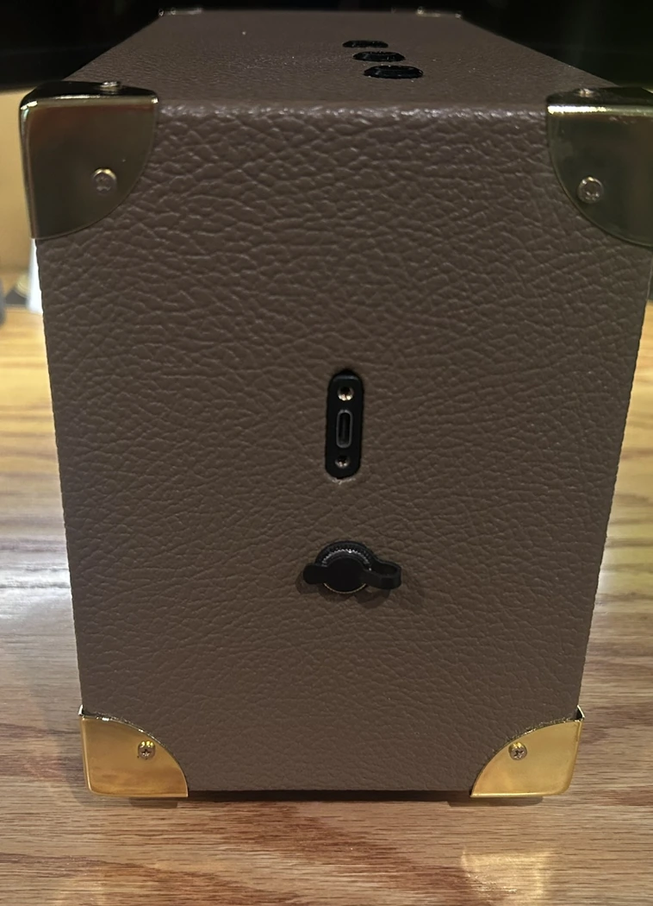
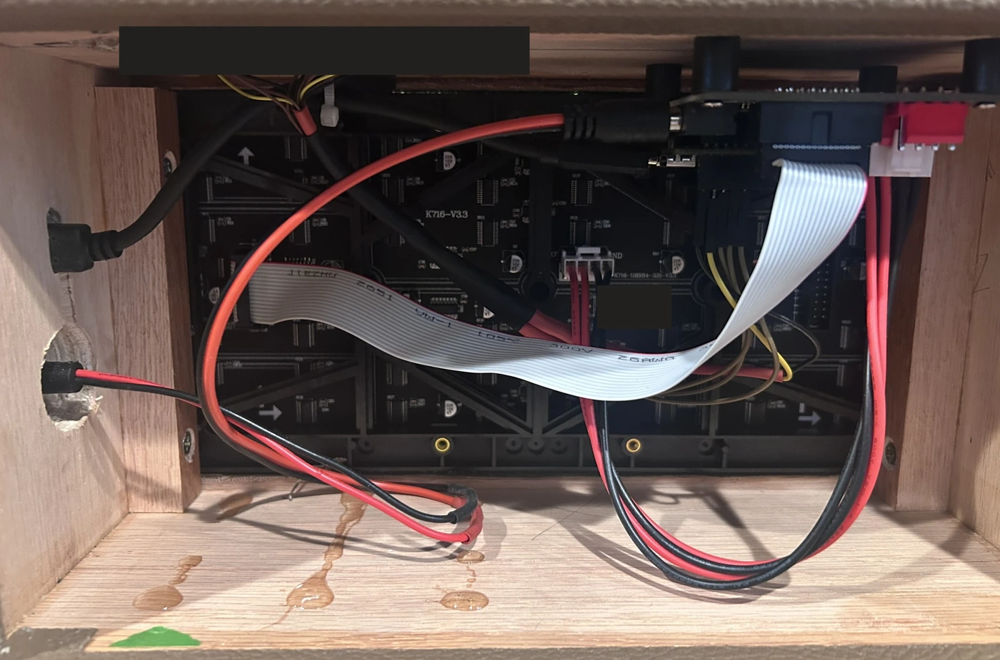
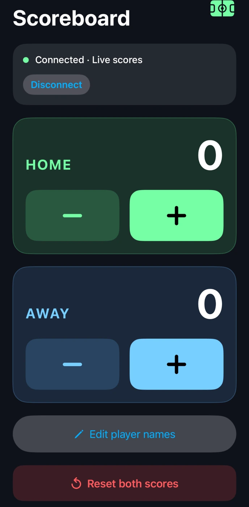

Build guide
Start on the bench.
Prove the display and buttons in the open, then assemble the cabinet and add Bluetooth if you want it.
Bring up the display
Use a P2 128 × 64, 1/32-scan HUB75E RGB panel, an ESP32-S3-DevKitC-1 N16R8, and the documented 5 V supply. Match the scan type and driver as well as the connector. The first panel looked compatible at the connector but used a different geometry and scan arrangement.
- Lay out the panel, controller, and adapter. With power disconnected, wire the power and ground path and verify polarity.
- Connect the ribbon to the matrix input and match each signal to the GPIO map.
- Connect the three switches using the button diagram, then connect the controller to a computer with a USB data cable.
Flash and test
In Arduino IDE select ESP32S3 Dev Module and the serial port that appears when you plug in the board. The firmware compiled with Arduino-ESP32 3.3.7. Install ESP32 HUB75 MatrixPanel I2S DMA and Adafruit GFX.
Physical controls
Use the standalone sketch to score from the cabinet buttons.
Open standalone sketch ↗Physical controls + Bluetooth
Use the BLE sketch for the buttons and the iPhone controller, including editable names.
Open BLE sketch ↗Keep each sketch in its matching folder. Upload, then test a short press and a hold of at least 600 ms on each score button. Hold Reset to clear both scores. The lower blue row is Player 1 and the upper green row is Player 2.
BLE protocol and nRF Connect checklist ↗Fit the cabinet
Measure your panel before cutting the opening. The documented panel is 256 × 128 mm, but leave room for its frame, connectors, and ribbon cable. Dry-fit the top buttons, DC jack, and USB-C extension before applying the Tolex. Keep the rear panel removable for service and leave clearance around the wiring.




The side-mounted connectors keep power and USB service reachable from outside. Inside, the removable rear panel gives access to the adapter and matrix connections.
What changed on the bench
The P1.53 detour
The first panel was a 320 × 160 mm LEDLightsWorld commercial-signage module with 208 × 104 pixels and 1/52 scan. It cost $58.95 plus $19.00 shipping. The connector looked familiar, but that geometry and scan arrangement didn’t come up reliably with this ESP32 direct-drive setup.
P1.53 prototype
208 × 104 pixels · 1/52 scan
$77.95 including shipping
P2 production panel
128 × 64 pixels · 1/32 scan
$46.05 delivered
The green lines appeared on the replacement panel
The new P2 panel showed bright green horizontal rows during bring-up. The sketch still declared 208 × 104 from the old panel. The next step was to set the sketch to 128 × 64 and return to the P2 panel’s own scan and wiring requirements. Green rows alone didn’t establish which timing or wiring settings were correct.
What worked in the finished build
The production sketch uses one 128 × 64 panel, the ICN2038S driver setting, clock phase disabled, latch blanking enabled, and brightness 140 out of 255. The HUB75E connector supplies the fifth row-address line used in this 1/32-scan build. For a repeat build, check panel geometry, scan ratio, and driver before ordering, then use the verified GPIO map during bring-up.
Build the iPhone controller

With the BLE sketch running, open ios/ScoreboardController/ScoreboardController.xcodeproj on a Mac. Choose your signing team and a bundle identifier you control. Build for a connected iPhone running iOS 16 or later, then open the app, grant Bluetooth access, and connect to Scoreboard.
Test both directions by scoring from the app and then pressing a physical button. With current firmware, Edit player names saves both labels on the board.